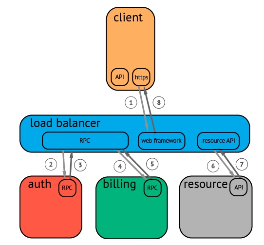

OpenTracing通过提供平台无关、厂商无关的API，使得开发人员能够方便的添加（或更换）追踪系统的实现。 OpenTracing提供了用于运营支撑系统的和针对特定平台的辅助程序库。程序库的具体信息请参考详细的规范。
为什么需要Tracing
开发和工程团队因为系统组件水平扩展、开发团队小型化、敏捷开发、CD（持续集成）、解耦等各种需求，正在使用现代的微服务架构替换老旧的单片机系统。 也就是说，当一个生产系统面对真正的高并发，或者解耦成大量微服务时，以前很容易实现的重点任务变得困难了。过程中需要面临一系列问题：用户体验优化、后台真是错误原因分析，分布式系统内各组件的调用情况等。 当代分布式跟踪系统（例如，Zipkin, Dapper, HTrace, X-Trace等）旨在解决这些问题，但是他们使用不兼容的API来实现各自的应用需求。尽管这些分布式追踪系统有着相似的API语法，但各种语言的开发人员依然很难将他们各自的系统（使用不同的语言和技术）和特定的分布式追踪系统进行整合，
什么是一个Trace？
在广义上，一个trace代表了一个事务或者流程在（分布式）系统中的执行过程。在OpenTracing标准中，trace是多个span组成的一个有向无环图（DAG），每一个span代表trace中被命名并计时的连续性的执行片段。
分布式追踪中的每个组件都包含自己的一个或者多个span。例如，在一个常规的RPC调用过程中，OpenTracing推荐在RPC的客户端和服务端，至少各有一个span，用于记录RPC调用的客户端和服务端信息。
一个父级的span会显示的并行或者串行启动多个子span。在OpenTracing标准中，甚至允许一个子span有个多父span（例如：并行写入的缓存，可能通过一次刷新操作写入动作）。
一个典型的Trace案例

在一个分布式系统中，追踪一个事务或者调用流一般如上图所示。虽然这种图对于看清各组件的组合关系是很有用的，但是，它不能很好显示组件的调用时间，是串行调用还是并行调用，如果展现更复杂的调用关系，会更加复杂，甚至无法画出这样的图。另外，这种图也无法显示调用间的时间间隔以及是否通过定时调用来启动调用。一种更有效的展现一个典型的trace过程，如下图所示：
这种展现方式增加显示了执行时间的上下文，相关服务间的层次关系，进程或者任务的串行或并行调用关系。这样的视图有助于发现系统调用的关键路径。通过关注关键路径的执行过程，项目团队可能专注于优化路径中的关键位置，最大幅度的提升系统性能。例如：可以通过追踪一个资源定位的调用情况，明确底层的调用情况，发现哪些操作有阻塞的情况。